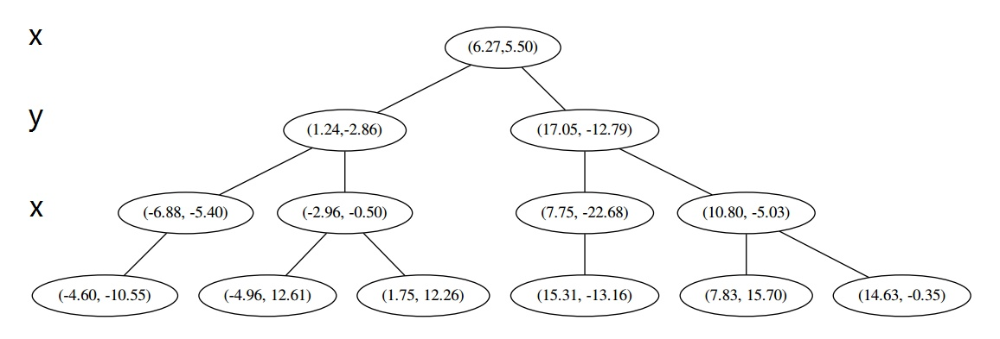
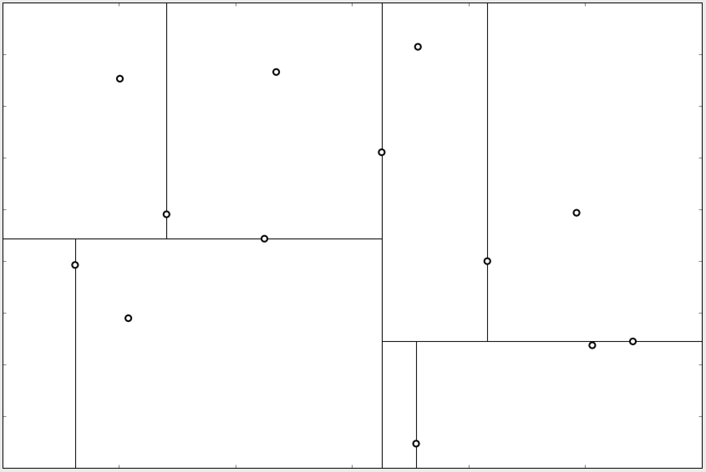

在经典的分类算法KNN中, 为了加速邻近点的搜索, 可以使用一种数据结构, 即KD Tree, 本篇就主要讲解KD Tree的原理.
前言
最近邻检索在不少场景中, 是一项比较关键的技术. 比如在推荐系统的召回板块中, 使用隐式召回的话, 一般会通过一些算法(如矩阵分解), 给到每个用户和物品一个稠密的Embedding向量. 通过这个向量, 可以用一些方式(如余弦相似度), 来计算用户与物品的相似度, 将相似度高的物品, 作为候选集, 用于推送或者排序.
而现在假如有了一堆同维度的向量, 并使用欧式距离作为指标, 给定一个向量, 想要挑选出离这个向量最近的$N$个向量, 可以怎么做呢?
最简单粗暴的方法, 就是拿着这个向量, 去和所有的向量进行一次距离的计算, 这样遍历一次的时间复杂度为$O(N)$, 当$N$很大时, 会非常耗费时间.
另外的一种思路, 就是使用某种数据结构, 用空间换时间, 先用一种方式把原本的数据组织起来, 然后在后续搜索的时候, 尽可能地排除掉那些明显不合适的向量, 只在少数的向量中计算距离和进行比较.
KD Tree就是这样一种数据结构, 下面对其原理进行讲解.
原理
构建
KD Tree的构建原理非常简单, 假设现在有$N$个点, 每个点对应一个向量, 向量维度假设为$M$.
首先, 按照某种顺序来从$M$个维度中, 选择一个维度$m$, 选择的方法一般有如下两种:
- 从$0$到$M-1$维循环选取.
- 选取当前方差最大的维度.
然后找到这个维度上, 所有点该维度上数值处在中间的那个点, 用这个”中间点”来作为划分节点, 用该维度上的值大于或者小于该阈值, 将点划分到两侧.
用来划分的点可以视作树的父节点, 其余的点被划分到子节点上.
不停地重复上面的操作, 知道最后每个树节点(包括内部节点和叶子节点)上, 仅包含一个点, 那么此时KD Tree构建完成.
在维度为2的向量上, 构建完成的KD Tree大概长这样:

并在平面上的大致分布如下, 其中内部的每条线表示一次划分:

通过这种方式, 将所有的点(向量)组织到了一棵平衡二叉树中, 或者说可以看成将点划分到了向量空间中的一个个”小方块”中, 借助这样的数据结构, 可以有效地排除掉距离明显很远的点, 减少无效计算.
搜索
下面来讲如何在KD Tree中进行搜索, 在说明具体流程之前, 要定性地明确一些东西, 才能更好的理解.
首先, 在构建好一棵KD Tree后, 给定一个目标点, 从根节点开始, 是可以根据节点的划分, 进入到某个叶子节点的. 一般来说, 这个叶子节点中的点, 和目标点的距离是比较小的.
假如最后想要挑选出$n$个与目标点距离最小的点, 那么下一步应该去哪找呢?
应该去父节点, 因为父节点离当前叶子节点是比较近的.
现在处在父节点上, 下一步可以搜索父节点的另外一侧, 在向量空间中, 相当于超平面隔开的另一侧空间.
那么是否应该搜索父节点的另一侧呢? 这要看目标点到父节点对应分割超平面的距离, 因为处在超平面另一侧的点, 与目标点的距离, 一定是大于该距离的, 如果这个距离比当前已收集点中的最大距离还大, 并且已收集点数量已达到$n$, 那么就没必要去父节点另一侧搜索了.
什么时候算法停止呢? 首先肯定要满足找到了$n$个点, 其次还要当前位于根节点上.
为什么最后位于根节点才能停止算法呢? 因为假设处于某个内部节点上, 那么其父节点, 以及父节点的另一侧, 都有可能存在距离较小的点. 当从叶子节点返回根节点时, 有两种情况, 一种是通过计算目标点与根节点对应超平面的距离, 距离大, 不用去根节点另一侧搜索, 算法停止; 还有一种是再到根节点另一侧进行搜索, 最终再次返回根节点时, 算法停止.
下面对KD Tree搜索过程进行比较准确的描述.
(一) 初始化.
假设现在已构建好KD Tree, 给定目标点, 要找到$n$个距离最近的点, 目标点一开始位于根节点.
执行(二)步.
(二) 下沉.
按树节点的划分, 下沉到对应叶子节点
执行(三)步.
(三) 计算距离.
计算当前节点的距离, 更新候选点.
若当前不满$n$个点, 直接加入; 若满$n$个点, 且距离比现有候选点中的最大距离小, 那么替换该点.
并将当前节点标记为”到此一游”, 这里的”到此一游”, 不是指在上面(二)步中的经过, 而是要计算距离后.
若当前节点另一侧不存在, 执行(四)步.
若当前不满$n$个点, 那么去另一侧搜索, 执行(二)步.
若当前满$n$个点, 计算目标点与当前节点对应的超平面的距离, 用该距离与当前候选点中的最大距离比较, 来决定是否搜索另一侧. 若搜索, 则执行(二)步, 否则执行(四)步.
(四) 返回父节点.
进入到当前节点的父节点.
若父节点已经被标记”到此一游”, 且不是根节点, 继续执行(四)步.
若父节点已经被标记”到此一游”, 且是根节点, 恭喜, 算法停止.
若父节点未被标记”到此一游”, 执行(三)步.
指标转换
另外一个需要注意的是, 对于邻近检索中的指标, 原本给出的是欧氏距离, 而对于其它一些指标, 如内积等, 直接照搬原算法不太行, 那么这时候应该怎么做呢?
其实一般来说, 在做邻近搜索的时候, 常用的指标, 就是欧氏距离, 内积, 余弦相似度这些, 具体用什么指标, 应该根据实际的数据和任务来决定.
而这些指标之间其实是有一些联系的, 可以通过一些方式来进行转换.
比如现在给出两个标准化的向量$x,y$:
那么这时候两个向量的内积, 就等于其余弦相似度:
并且两个向量欧氏距离的平方, 与其内积之间的关系如下:
所以, 在向量的标准化的情况下, 内积, 余弦相似度, 欧氏距离是等价的.
在特定的场景下, 如果原本是用内积作为指标, 那么可以拿一些样本来进行分析, 比较在对向量做了标准化后, 用余弦相似度是否可以代替内积, 如果可以, 那么像KD Tree这种原本基于欧式距离的算法, 也能派上用场了OvO
小结
以上就是KD Tree这种数据结构的原理了, 讲解了其构建过程与搜索过程, 整体并不太复杂.
但是KD Tree有着其一些问题, 比如在构建KD Tree时, 一般来说要用到所有数据, 将树保存在内存中, 在数据很大的时候, 可能还没等时间复杂度降低, 空间复杂度就先顶不住了QAQ 而真正在大数据场景下, 做到又快, 又节省内存的一个开源库, 叫做Faiss, 在我的大数据板块中有介绍♪(^∇^*)